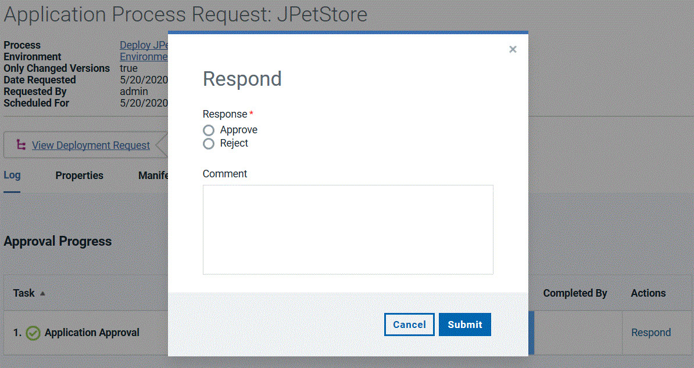

Deploying applications
To deploy application components, run an application process on an environment.
Before you begin
Procedure
-
For the environment to run the deployment in, click Request Process
 .
The Run Application Process window is displayed.
.
The Run Application Process window is displayed.
Example
What to do next
When a process starts, use the Application Process Request pane to review the deployment status. This pane is also used if the process requires approvals, as shown in the following figure.

The application process request shows each step in the process. Within each process, the steps are not shown in the order that they run in. Instead, steps are shown in the order of appearance in the process editor, from the steps at the top of the canvas to the steps at the bottom of the canvas.
The deployment is considered successful when the application process finishes. An application process might skip component processes and still finish. This means that a technically successful application process might not deploy all of the expected components. To ensure that all components deploy successfully, review the deployment details. Expand a process step and click View Child Execution to open the Deployment of Component pane, which can be used to review the deployment details.
In the Deployment of Component pane, you can review the deployment output log, error log, and input and output parameters.